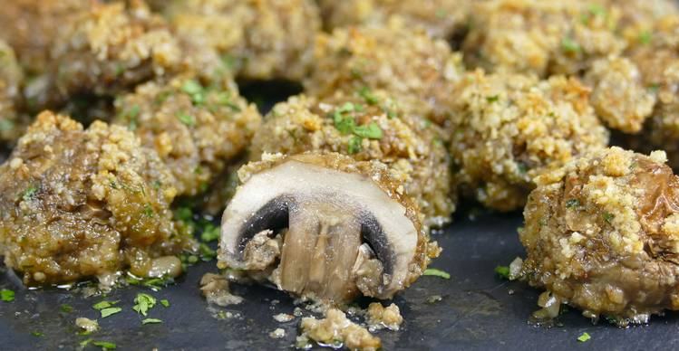

Champiñones crujientes al horno
Ingredientes para 4 personas
- 225 gramos de champiñón entero
- 50 gramos de harina de almendra
- 40 gramos de pipas de girasol peladas
- 1 cucharadita de ajo en polvo
- 1 huevo
- 1/2 cucharadita de pimentón dulce
- 1/2 cucharadita de sal
- aceite de oliva
Preparación
- Machaca las pipas de girasol peladas con ayuda de un mortero.
- Pon las pipas de girasol molidas en un bol junto con la harina de almendra, el ajo en polvo, la sal, el pimentón y el perejil. Mezcla todo bien.
- Pon el huevo en un bol y bátelo.
- Reboza los champiñones limpios, primero en el huevo batido y después en el bol con la mezcla de pipas y harina de almendra.
- Coloca los champiñones rebozados en la bandeja de horno. Rocíalos con aceite de oliva.
- Hornea los champiñones a 220ºC durante 12-14 minutos.
- Espolvorea con perejil picado y sirve los champiñones crujientes con el jugo que han soltado.
- Puedes añadir una cucharadita de mantequilla fundida al huevo batido para darle más sabor al champiñón.
- Se puede preparar con antelación la mezcla de especias.